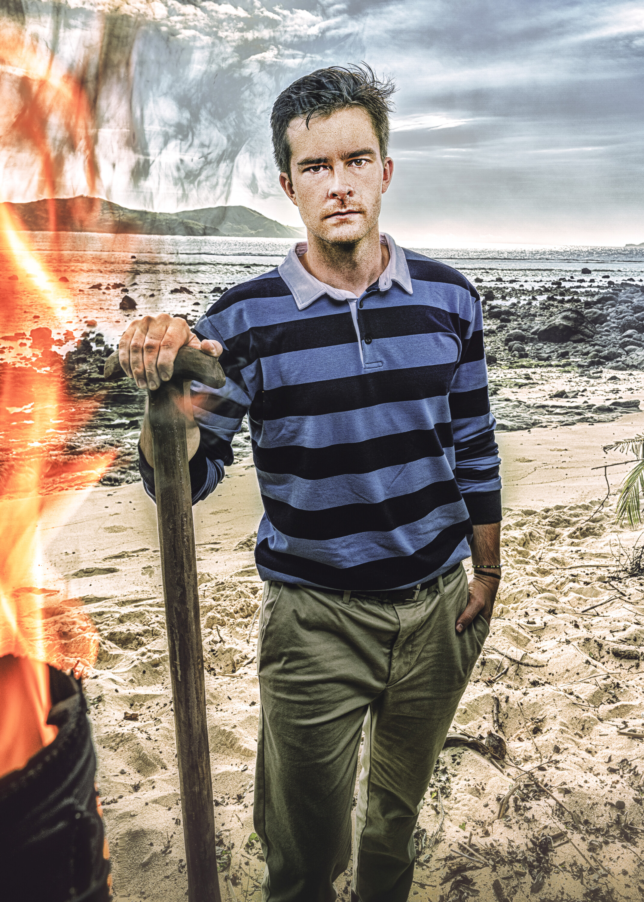

Charlie Davis

Episode 1
Charlie had a quieter premiere but bonded closely with Coach, who gave him a toe ring that hadn't been off his body in 37 years. Mike White also approached him about working together. Pre-game intel suggests Jonathan wants to target Charlie early. Kalo won immunity so no Tribal Council.
Alliances
Loosely aligned with Coach Wade and Mike White. Low profile keeps him safe for now but Jonathan's pre-game desire to target him is a lurking danger. Potential swing vote between the two Kalo factions.
About
Charlie Davis is Survivor's biggest Swiftie and one of the best strategists of the new era. On Season 46, he was a stabilizing force in one of the most chaotic seasons in recent memory. He made it to the Final Tribal Council but suffered a last-minute loss at the hands of his closest ally Maria. The 27-year-old attorney is part of what he calls the "Tortured Finalists Department," eager for another shot at the title.